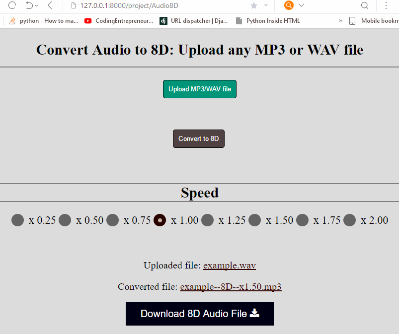

<h1 style="padding-left:4%;padding-top: 2%;padding-bottom: 2%;padding-right: 10%;border-bottom: 1px solid #BDBDBD;">


8D Audio Converter ( Web Application )


</h1>


Python Django based Application


<h2><a href="8D_web.mp4" target="_blank"> Process </a></h2>


<h2><a href = "https://drive.google.com/open?id=1RVLob7iBU-oh_p0HynXLOzbPDad8YcQ9" target="_blank" >ZIP File </a></h2>

<h2><a href="example.wav" target="_blank"> Normal Audio </a></h2>
<h2><a href="example--8D--x1.50.mp3" target="_blank"> 8D Audio </a></h2>


